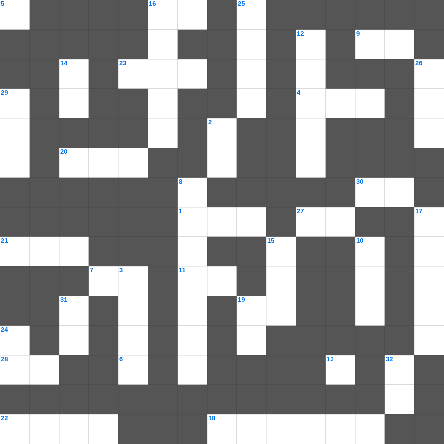

출애굽기: 홍해의 기적
📌 서비스 정의
십자가로세로는 교회 주보와 주일학교에서 사용할 수 있는 성경 기반 가로세로 퍼즐 서비스입니다. 성경 인물, 사건, 핵심 구절을 바탕으로 제작되었습니다. 온라인 풀이 및 인쇄 기능을 제공합니다.
오늘은 출애굽기의 주요 내용을 담은 출애굽기 성경공부 자료를 준비했습니다. 총 35개의 힌트가 있으며, 주일학교 교재나 성경공부 자료로 활용하기 좋습니다. 무료로 즐기는 출애굽기 가로세로 퍼즐을 지금 바로 풀어보세요!

📝 가로 힌트
1. 제사장이 손발을 씻는 놋 그릇
4. 언어가 혼잡하게 된 곳
6. 너는 나 외에는 다른 이것들을 두지 말라
7. 새 예루살렘 성곽의 첫 번째 기초석
9. 나의 이것을 너희에게 주노라
11. 열 처녀 비유에서 준비해야 했던 것
13. 공중에 나는 이것(다섯째 날)
16. 예수님의 육신의 아버지
18. 다윗이 물맷돌로 거인 장수를 이긴 사건
19. 어려운 이웃을 돕는 일
20. 모세의 누나
21. 매우 작은 씨앗의 대명사
22. 할 수 있거든이 무슨 말이냐 믿는 자에게는 이것이 없느니라
23. 하나님이 시내산에서 모세에게 주신 법
27. 야곱이 사다리 환상을 본 곳
28. 다윗이 연주하던 악기
30. 에덴의 동쪽으로 쫓겨난 인류
📝 세로 힌트
2. 주 예수의 이것이 모든 자들에게 있을지어다
3. 바울이 감옥에서 쓴 서신들
5. 겨자씨 한 알 만한 믿음이 있으면 이 이것을 옮기리라
8. 요나를 삼켰던 존재
10. 삼손의 힘의 비밀을 알아낸 여인
11. 쉬지 말고 이것하라
12. 남은 조각을 거둔 바구니의 수
14. 나는 마음이 이것하고 겸손하니
15. 부지중에 지은 죄를 속하기 위한 제사
16. 성경의 맨 마지막 책
17. 노아가 보낸 비둘기가 물고 온 잎
19. 주 예수를 믿으라 그리하면 너와 네 집이 이것을 받으리라
24. 노아 시대에 온 세상을 뒤덮은 물 심판
25. 태초에 하나님이 세상을 만드신 일
26. 베드로와 안드레의 고향
29. 나아만 장군이 문둥병을 고친 강
31. 다윗이 피신했던 블레셋 도시
32. 일곱째 날에 하나님이 하신 일
🧑🏫 교회 교육 자료 활용
이 퍼즐은 주일학교 교재 추천 자료로 활용할 수 있고, 주일학교 주보에 넣기 좋은 분량으로 구성되어 있습니다. 수업용 주일학교 교안에 활동지로 붙이거나, 예배 후 복습용 주일학교 공과교재로 바로 사용할 수 있습니다.
🏷️ 키워드
출애굽기 성경공부 자료, 출애굽기, 십자가로세로, 성경퀴즈, 말씀퀴즈, 가로세로퍼즐, 주일학교 교재 추천, 주일학교 주보, 주일학교 교안, 주일학교 공과교재